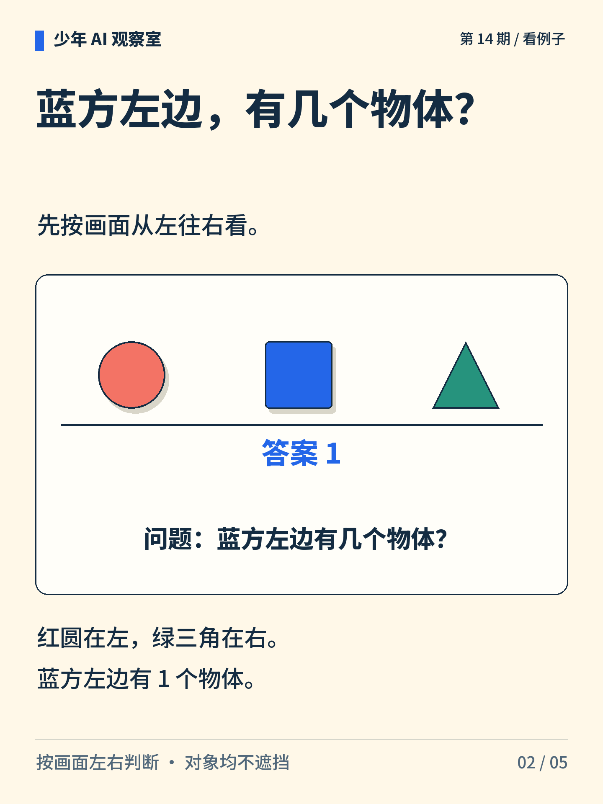
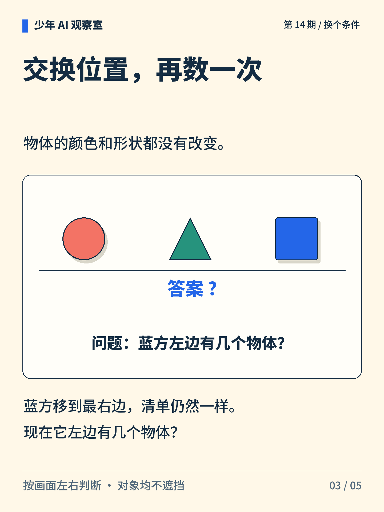
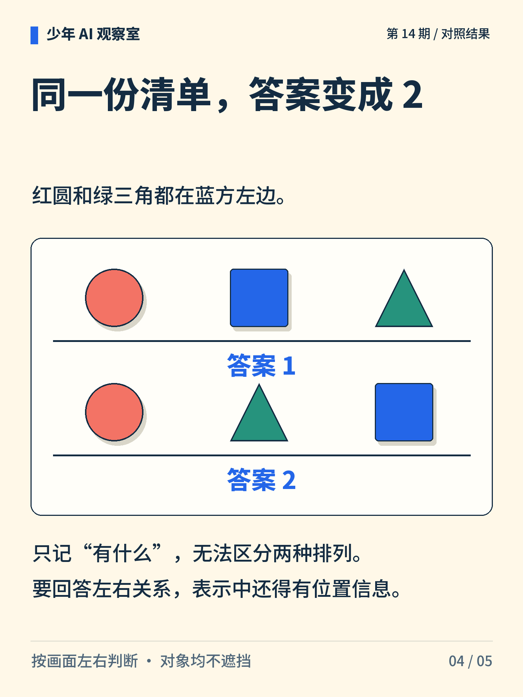
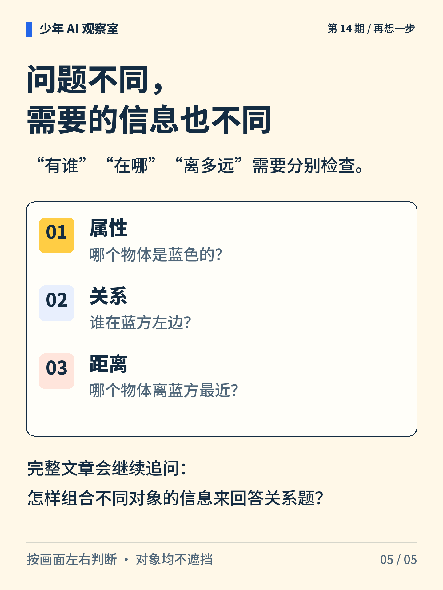

少年 AI 观察室 · 第 14 期
认出了物体，就懂它们的关系？
红圆、蓝方、绿三角一个不少。只换位置，“蓝方左边有几个”的答案就变了。

图解文字
红圆、蓝方、绿三角的两种排列，物体清单相同，左右关系不同。

图解文字
从左到右为红圆、蓝方、绿三角。蓝方左边只有红圆，共 1 个。

图解文字
改为红圆、绿三角、蓝方。颜色和形状未变，请重新数蓝方左边的物体。

图解文字
前一种排列答案为 1，后一种为 2。清单相同，位置改变导致答案改变。

图解文字
属性问题、位置关系问题和距离问题，要求利用的信息不同。
想一想
只保存物体清单、不保存位置，还能回答左右关系吗？
展开参考思路
不能只凭这份清单回答。红圆、蓝方、绿三角完全相同，但顺序变了，蓝方左边的物体数就从 1 变成 2。表示中需要保留足以判断位置关系的信息。
知道有哪些物体，还不足以回答它们的位置关系。
左右均按画面方向判断，三个对象都不遮挡。这组图只检验特定位置关系，没有据此证明模型具备一般推理能力。
正文首图为 AI 辅助生成的概念插画；第 2—5 张图按核对过的文字与规则绘制。
延伸阅读资料
文中算例与图解用于说明原理，不是实际模型的测评结果。研究结论对应以下资料。〔1〕 Santoro 等，2017，A Simple Neural Network Module for Relational Reasoning。arXiv:1706.01427。
https://arxiv.org/abs/1706.01427
书目信息沿用原稿，本轮未重新核验外部网页的可访问性。